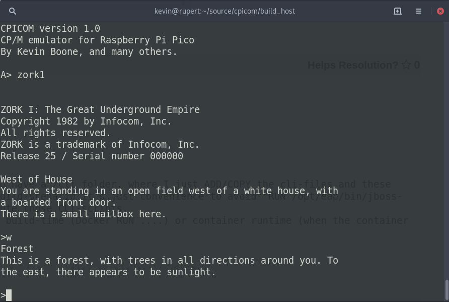

Running CP/M on the Raspberry Pi Pico microcontroller
 Forty years after its heyday, the CP/M operating system -- originally
designed for 8-bit microprocessors -- is having a bit of a revival,
as is the Z80 CPU chip it was mostly commonly used with.
That it's still possible to buy a Z80
IC is remarkable in itself but, astoundingly, there's a number of
new Z80-based
products on the market. Particularly noteworthy are kits or complete
computers based on the
Z80-MBC2 and the
RC2014 designs. To be fair, these
products are aimed at enthusiasts, not mainstream users; but it's
pretty amazing that they exist at all.
Forty years after its heyday, the CP/M operating system -- originally
designed for 8-bit microprocessors -- is having a bit of a revival,
as is the Z80 CPU chip it was mostly commonly used with.
That it's still possible to buy a Z80
IC is remarkable in itself but, astoundingly, there's a number of
new Z80-based
products on the market. Particularly noteworthy are kits or complete
computers based on the
Z80-MBC2 and the
RC2014 designs. To be fair, these
products are aimed at enthusiasts, not mainstream users; but it's
pretty amazing that they exist at all.
I've argued elsewhere that these technologies are worth keeping around -- not just for sentimental reasons (although that's a good enough reason for many of us) but because they demand the use of skills and knowledge that we otherwise run the risk of losing completely.
In this article I describe the implementation of CPICOM -- a CP/M 2.2 emulator for the Raspberry Pi Pico. The Pico is a tiny, low-cost ARM-based controller, with 2Mb of flash ROM and 256kB of RAM. When running a CP/M emulator on the Pico, the overall performance is about the same as that of a real Z80-based microcomputer of 1980s vintage -- pretty slow by contemporary measures.
The source code, and installable UF2 files, for CPICOM are available in my GitHub repository.
How CPICOM works
CPICOM embeds a Z80 emulator written in C, that dates from the 1990s. There are a number of Z80 emulators around, but none was particular easy to port to the Pico. The best-known, and probably the most accurate, is Udo Munk's Z80pack. Unfortunately, despite a great deal of fiddling, I couldn't make it work on the Pico. Z80pack, like most emulators, assumes the presence of a Linux-like filesystem to store files. The Pico has no filesystem, except the one I implemented in the flash ROM. In the end, the emulator that seemed to offer the best compromise between ease of porting and accuracy is the one by Parag Patel, with extensions by Joseph Allen. The original source code for that project is here.
Of course, emulating the Z80 is not sufficient -- we also need to emulate the CP/M API as well. The API is provided by the BDOS and BIOS components of CP/M. CPICOM embeds a BDOS implementation (P2DOS) in Z80 machine code, which is connected to a custom filesystem compatibility subsystem. CPICOM provides its own command-line interpreter, rather than the CP/M "CCP", because CCP is brutally unfriendly -- even for a command line, and that's saying something.
There's just enough room in the Pico's flash for the CPICOM program -- which comes to about 200kB of ARM code -- and two emulated 720kB floppy disks. These form drive 0 and drive 1 in CP/M -- or "A:" and "B:" as they appear in the command prompt.
Because the Z80 emulator code is scattered with calls to C file
functions -- fopen(), read(), write(),
etc., CPICOM provides its own implementations of all these functions,
which map onto operations onto the emulated floppy disks.
Writing a complete file handling layer for a microntroller is no small
task, but I'm hoping that work will be useful in other applications
as well.
CPICOM is implemented in about 20,000 lines of C, and designed to be compiled using the Pico software development kit.
How to use CPICOM
If you want to try CPICOM you'll need a Raspberry Pi Pico, the UF2 firmware from my GitHub repository, and a terminal emulator. If you want to install actual CP/M software on it -- and it's not much use otherwise -- you'll need a terminal emulator that can send files using the YModem protocol. This is no problem with a Linux workstation, but it might be awkward for Windows users. I've been told that terminal emulators for Windows are not especially capable, and it might be easier to install the Windows Linux subsystem, and use the old Minicom terminal emulator. Minicom is what I use, and the only terminal software I'm at all competent to describe.
The Pico emulates a USB storage device when it's in bootloader mode. To get it into this mode, hold down the little button on the Pico whilst plugging it into a computer using a USB cable. You can then upload the UF2 file. As soon as the file is uploaded, the Pico will start running the CP/M emulator, and the USB port will switch over to serial mode. You can then access it using a terminal emulator.
The terminal emulator should show CP/M's notorious "A>" prompt.
You can run dir to lists the files on the A: drive, but
there won't be any this stage. There's also a B: drive, also empty.
Both these drives emulate a 720kB floppy drive. The data is
actually stored in the Pico's flash ROM, which can be written at
runtime as well as when uploading firmware.
Detailed steps for uploading CP/M programs are in
the README file on GitHub. Essentially you need to start a YModem receive
using the yrecv built in command in CPICOM, then tell the
terminal emulator to start a YModem upload. Ideally, set the
YModem block size to 1kB if that isn't the default -- that seems
to be the most reliable setting. It's not hugely fast to upload
software this way, but CP/M programs are rarely large. Be aware
that many CP/M programs are distributed as multiple files, all of
which will need to be uploaded to the same (emulated) disk drive.
CPICOM will run a number of CP/M stalwarts, like WordStar and Zork (see screenshot below). In fact, I would expect most "well-behaved" CP/M programs to work, so long as they were written for generic CP/M 2.2, and not for a specific microcomputer.

Things to bear in mind
CP/M was primitive, and designed to run on the primitive hardware of the day. CP/M programs often behave in ways which would be damaging to modern hardware -- endless input-checking loops at full CPU speed, for example. To be honest, I do not know if this kind of thing would be damaging to a Pico, but I don't want to risk it. CPICOM has a number of pause points built in, to give the microcontroller time to idle. These do slow the system down even further, and I'm not sure whether they're necessary. They're certainly necessary when running the same code on a Linux workstation -- I'm certain of that much at least, just from listening to the roar of the cooling fans.
CPICOM emulates a generic CP/M 2.2 machine. It doesn't have any of the features of a specific computer -- most obviously, it has no graphics or sound capabilities.
Everything about CP/M is in a kind of legal limbo. Although it's easy to obtain CP/M software in binary form, it's mostly not in the public domain, and it's very rarely open source. CP/M predates the open source movement by thirty years. I'd like to include CP/M software, or links to software, that I know to work with CPICOM, but I'm not sure of the legal implications. A web search for "CP/M software archive" will provide some good leads.
Much CP/M software was entirely line-based, like Zork -- type a line of input, get some lines of output. Such software will probably work with any terminal or terminal emulator. Screen-based software, like word processors and programming editors, immediately raise problems of terminal compatibility. CPICOM makes one small contribution to solving this problem -- it converts VT52 terminal control codes to VT100. This is to make WordStar, and programs that were influenced by it, work properly with the Mincom terminal. In all other respects, CPICOM can't do anything to help with the fact that the CP/M software might be written for a terminal that your emulator doesn't support. Some CP/M software allows the user to chose a terminal type -- when using Minicom, VT52 is probably the best choice, given the built-in conversion provided by CPICOM.
Further work
These are the various ways in which I might extend this project, if time permits. Of course, collaborators are always welcome.It would be interesting to fit the Pico with a real display device, and thus make it a better replica of a 1980s desktop computer. With a captive display, CPICOM could start to replicate a real, proprietary computer of the era, perhaps one with a graphics controller. The Pico can drive a VGA monitor at low-ish resolution, but it's not clear whether it can do this an still have CPU power left over for anything else. Still, if the ZX80 could generate a video signal from its CPU while still running BASIC programs back in 1980, the Pico should be able to do it. It would be interesting to try to use the second CPU core for video generation but, as things currently stand, there's no robust way to do this whilst writing to the flash storage, and that's where the file storage is.
Add support for external storage devices. The obvious choice here is an SD card, probably with a VFAT filesystem. However, it might be interesting to fit a real floppy drive (if any working examples can still be found outside museums). The need to push software onto the board using YModem is a bit of a nuisance.
If CPICOM can drive a display, the logical next step is to provide it with a keyboard. It wouldn't be hard to interface a PS/2 keyboard or similar, but it would be more fun to repurpose a real keyboard and case from a defunct VIC20 or something like it.
Conclusion
I was fortunate enough to work with CP/M back in the late 70s, when it was a big deal. It's been interesting to rediscover the joys of BDOS and BIOS, and the Z80 instruction set. Back in the 70s it did not surprise me know much could be achieved in a program that fit into 30kB of memory -- I just took it for granted. These days I'm surprised at how little we often accomplish, in software installations a million times larger than this.